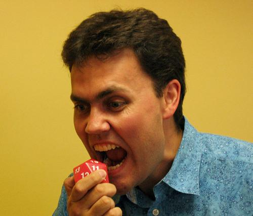
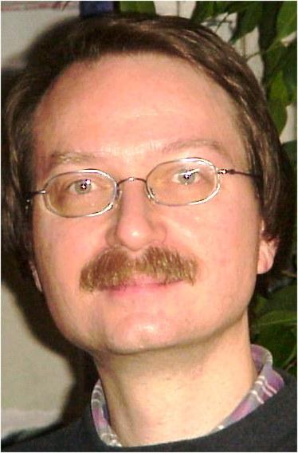

Quelle: openreflections.wordpress.com
Johan Huizinga*1872 in Groningen; †1945 in De Steeg
Professor of General History at the University of Leiden, Netherlands
1895 Degree in Indo-Germanic languages, Dutch, History and Geography
1897 Doctoral Thesis on Indian Drama
1905 Professor of General and Dutch History in Groningen
1915 Professor of General History in Leiden
Herfsttij der Middeleeuwen (1919)
[The Waning of the
Middle Ages (1924) / The Autumn of the Middle Ages (1996)]
Erasmus of Rotterdam (1924)
[Erasmus and the Age of
Reformation (1924)]
Homo Ludens. Versuch einer Bestimmung des Spielelements der
Kultur (1938)
[Homo Ludens, a study of the play element in
culture (1955)]
1933, at a conference organized by the Leiden University, Huizinga as the president asked the German Professor Johann von Leers to leave without a formal leave-taking, thus being one of the first in the academic world to display disdain for the growing antisemitic ideology in Germany.
Until his death in 1945, he was held in detention by the Nazis.
Quelle:
http://www.siruela.com
* 1913 in Reims; † 1978 in Paris)
Sociologist, Anthropologist, and Philosopher
École Normale Supérieure, Paris
École pratique des hautes études, Paris
Co-Founder of the College of Sociology
1971 he was elected to the Académie française.
1938: Le Mythe et l'Homme
1957: Les Jeux et les Hommes
1978: Le Fleuve Alphée. Autobiographie
1973: La Pieuvre : essai sur la logique de l'imaginaire
1991: The French Literary Prize for Latin American Literature is named after Roger Caillois
Quelle:
http://www.nicolelazzaro.com
*?
Senior Lecturer at the University of Uppsala, Sweden
Game Design Consultant and Trainer
Founder of the International Game Developers' Association
BA in philosophy, Stanford University, USA. Awarded 1984.
PhD in interactive storytelling from the School of Computing, University of Teesside, UK. Awarded 2013.
Break Into The Game Industry: How to Get A Job Making Video Games (2003).[7]
Andrew Rollings and Ernest Adams on Game Design (2003, with Andrew Rollings) (ISBN 1-59273-001-9)[8]
Fundamentals of Game Design, part of the Game Design and Development Series (2006, with Andrew Rollings)[9]
Fundamentals of Game Design, Second Edition (2009)[10]
Game Mechanics: Advanced Game Design (2012, with Joris Dormans)[11]
Fundamentals of Game Design, Third Edition (2014)[12]
6/92 – 7/99 „John Madden NFL Football“ as Lead Designer and A/V Producer for Electronic Arts
1999: „Dungeon Keeper 3“ as Lead Game Designer for Bullfrog Productions Ltd.
Quelle:
http://www.jesperjuul.net
*1970 in Århus, Denmark
Associate Professor at The Royal Danish Academy of Fine Arts - The School of Design.
Visiting Associate Professor at Comparative Media Studies/Writing, MIT.
February 1999: M.A. in Danish literature from University of Copenhagen
2000-2003: Ph.D. studies at IT University of Copenhagen
February-July 2003: Visiting scholar at Comparative Media Studies, MIT, Boston.
October 15th 2003: Finished Ph.D. dissertation, Half-Real: Video Games between real Rules and Fictional Worlds.
January 16th 2004: Successfully defended Ph.D. dissertation. Committee: Peter Bøgh Andersen, Marie-Laure Ryan, and Brian Sutton-Smith.
Half-Real: Video Games between Real Rules and Fictional Worlds. Cambridge, MA: MIT Press 2005.
A Casual Revolution: Reinventing Video Games and Their Players. Cambridge, MA: MIT Press 2010.
The Art of Failure: An Essay on the Pain of Playing Video Games. Cambridge, MA: MIT Press 2013.
1995: Company, Soup Games.
1997: Programs the Macintosh version of the triple CD-ROM game "Blackout" at Deadline Media.
1999: Develops a game engine for a series of promotional games for Lego in collaboration with Cite.
2007: Develops the casual game High Seas for GameTrust.
Co-organizer, first Nordic Game Jam, Copenhagen 2006.

Quelle:
http://www.adlibbing.org
*1970
CEO of Schell Games
Professor at Carnegie Mellon University's (CMU) Entertainment Technology Center
1994: Master of Science in Computer Networking and Virtual Reality
PhD in interactive storytelling from the School of Computing, University of Teesside, UK. Awarded 2013.
The Art of Game Design. Amsterdam: Elsevier/Morgan Kaufmann, 2008
Toontown Online
Pirates of the Caribbean Online
Toy Story Midway Mania
Pixie Hollow
Quelle:
http://pure.itu.dk
*1965
Head of Research at the Center for Computer Games Research at IT University of Copenhagen
Director for the Games Program
Editor-in-Chief of Game Studies (http://gamestudies.org ), the first academic journal of computer game research
PhD at the Department of Comparative Literature at the University of Bergen
Cybertext: Perspectives on Ergodic Literature (Johns Hopkins 1997)

Quelle:
www.bewersdorff-online.de/
*1958 in Neuwied, Germany
CEO of Mega-Spielgeräte in Limburg
CEO of GeWeTe (Geldwechsel- und Kassenautomaten) in Mechernich
1975-1982: Mathematics at the University of Bonn
1985: received doctorate at the Max-Planck-Institut for Mathematics
Glück, Logik und Bluff: Mathematik im Spiel - Methoden, Ergebnisse und Grenzen, Vieweg 1998
Algebra für Einsteiger: von der Gleichungsauflösung zur Galoistheorie, Vieweg 2002
Statistik – wie und warum sie funktioniert. Ein mathematisches Lesebuch, Vieweg+Teubner Verlag 2011
Objektorientierte Programmierung mit JavaScript: Direktstart für Einsteiger, Springer Vieweg, Wiesbaden 2014
1993: Domino (as slot machine game)
Several coin operated gambling machines